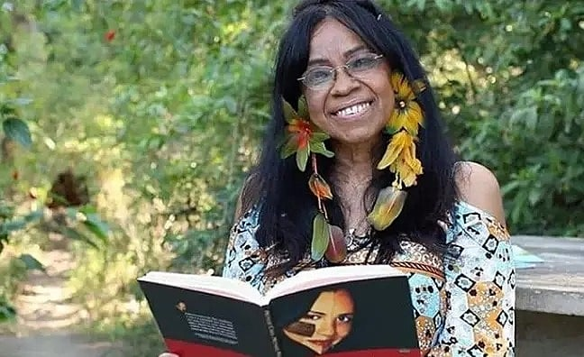

História de Eliane Potiguara
Eliane Lima dos Santos, ou como mais conhecida, Eliane Potiguara nasceu em 29 de setembro de 1950 no Rio de
Janeiro. Sua família se viu forçada a migrar do Nordeste para São Paulo. O bisavô, o guerreiro Chico Solón,
já havia sido vítima de violência na Paraíba, seu estado de origem, onde morreu assassinado. “Minha família
veio do nordeste por razão da violência do colonizador do plantio do algodão, em meados de 1910. Foi um processo
de migração compulsória”, conta. Em meio a esse imenso desafio, Eliane amadureceu e encontrou um grande dom: a
escrita. Aos sete anos, já redigia correspondências para a avó, analfabeta, que precisava se comunicar com os
parentes e amigos que ficaram na Paraíba. A mesma avó que foi a responsável por custear seus estudos. "Ela era
uma empreendedora de vender bananas, chamada Maria de Lurdes de Souza, filha de Chico Solón”, lembra, cheia de orgulho.
Na adolescência Eliane já tinha uma consciência crítica forjada na história da própria família e “pelos cochichos que
ouvia dos adultos” que faziam parte do círculo de amigos, como ela mesma gosta de contar. E não demorou muito a ocupar
um papel de destaque na luta pelo empoderamento das mulheres indígenas. Um marco importante em sua trajetória foi a
fundação da Rede GRUMIN, na Paraíba, em 1987, organização que até hoje cumpre o papel de educar e apoiar as mulheres
indígenas. Dois anos depois, lançou seu primeiro livro A terra é a mãe do índio.
Juntos, os dois movimentos lhe garantiram reconhecimento. Porém, a projeção como figura pública também trouxe consequências
inesperadas. “Os inimigos começaram a me perseguir e eu fui colocada numa lista de marcados para morrer em 1992, junto ao
jornalista Caco Barcellos e um escritor do Mato Grosso. Foi uma coisa horrível e eu acabei ficando doente. Meus filhos não
passaram de ano. Isso me prejudicou e nós somos prejudicados até hoje”, conta Eliane.
Ela levou o caso às Nações Unidas, em Genebra, na Suíça, para denunciar as violações dos direitos humanos. Escapou das ameaças
e tornou-se conhecida mundialmente, tendo sido convidada a discursar e a contribuir com a ONU (Organização das Nações Unidas) em diversas ocasiões.
Por conta da idade e dos problemas de saúde, Eliane já não participa de passeatas e outros movimentos que exigiriam mais de seu
físico, porém, afirma que jamais largará a militância. “Hoje atuo através da literatura, produzindo rodas de conversas, debates
e livros sobre o viver indígena e a relação humana com o território”, diz.

Referências:
https://www.terra.com.br/nos/conheca-eliane-potiguara-primeira-autora-indigena-do-brasil,9e19f4dd18dee3c43db436332093c44drr2ehtf7.html